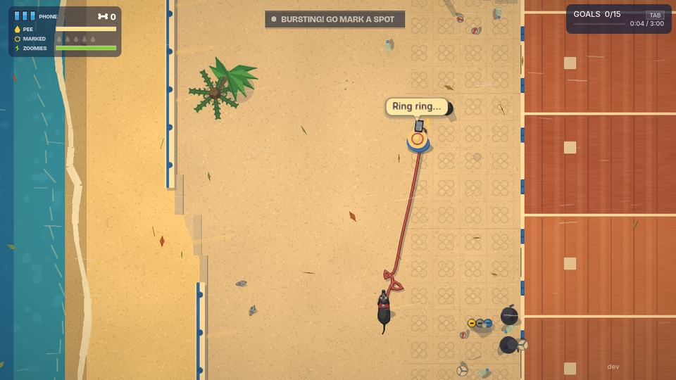
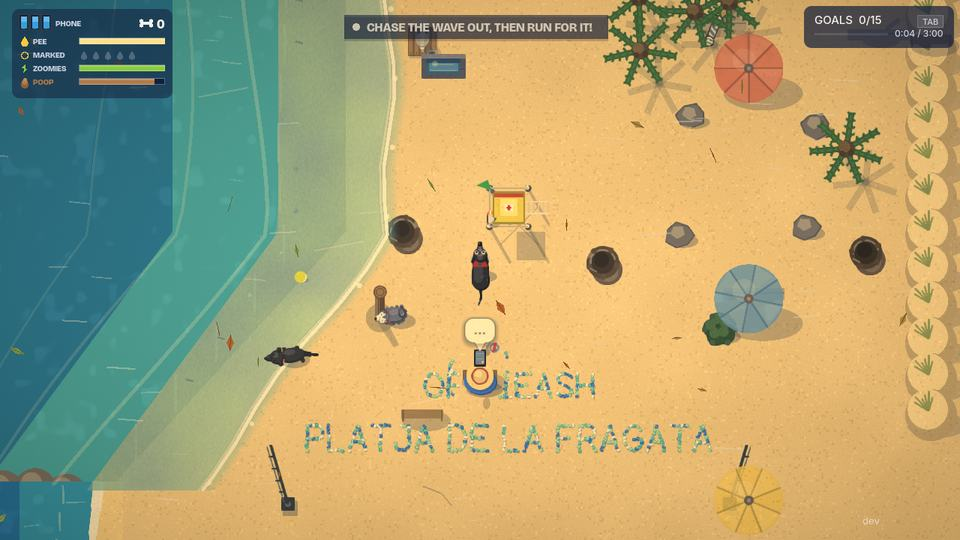

Whitewashed streets by the sea
Along the whitewashed seawall promenade in Sitges under a brisk sea breeze, dodging plates of xató, fluttering cafe napkins and sudden breaking waves below the church bells of Sant Bartomeu before hitting the sand of Platja de la Fragata.

